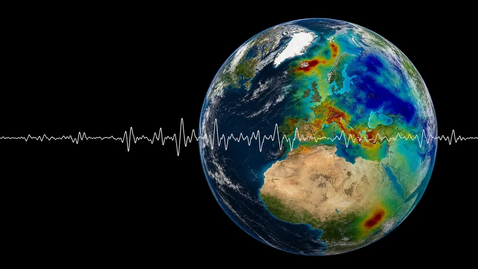

Workshop · co-organiser30–31 Jul 2026ETH Zürich & online
Tomographic Summer Chill
Two mornings on multi-scale tomography of the Earth — from near-surface DAS and ambient-noise imaging to full-waveform inversion and the electrical structure of the deep mantle. Co-organised with Andreas Fichtner and hosted by the Seismology & Wave Physics group.
Visit the workshop site